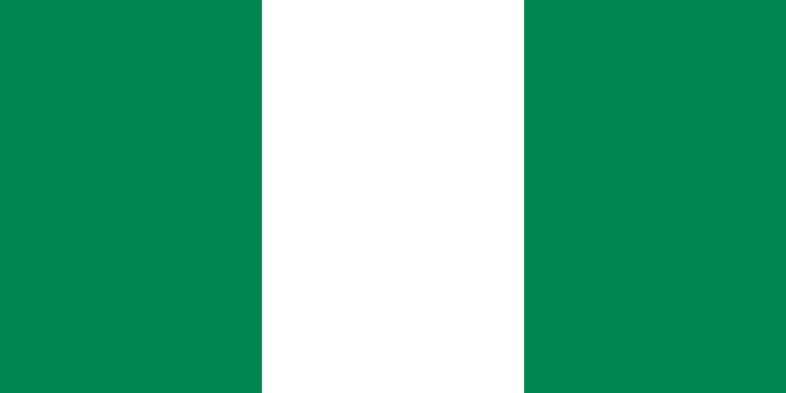
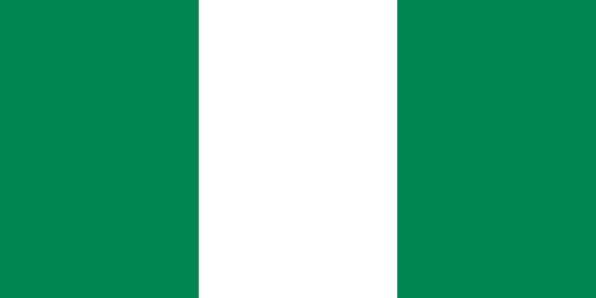
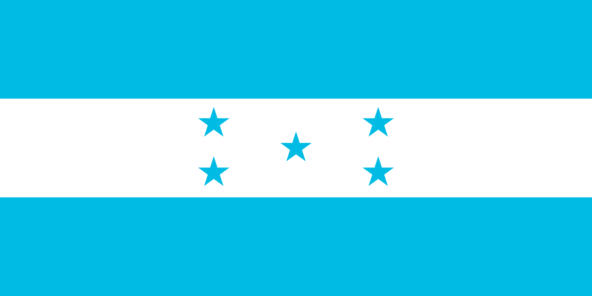
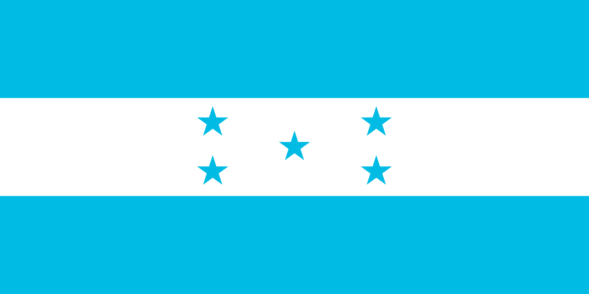

Grupo A


Participantes
Lo conforman: Argentina, como anfitrión del certamen; Uzbekistán, como campeón de la Copa Asiática Sub-20 de la AFC 2023; Guatemala como semifinalista del Campeonato Sub-20 de la Concacaf de 2022 y Nueva Zelanda como campeón del Campeonato Sub-20 de la OFC 2022.
Grupo B


Participantes
Lo conforman: Estados Unidos, como campeón del Campeonato Sub-20 de la Concacaf de 2022; Ecuador, como cuarto puesto del Campeonato Sudamericano de Fútbol Sub-20 de 2023; Fiyi como subcampeón del Campeonato Sub-20 de la OFC 2022 y Eslovaquia como ganador del play-off del Campeonato Europeo de la UEFA Sub-19 2022.
Grupo C


Participantes
Lo conforman: Senegal, como campeón de la Copa Africana de Naciones Sub-20 de 2023; Japón, como cuarto puesto de la Copa Asiática Sub-20 de la AFC 2023; Israel, como subcampeón del Campeonato Europeo de la UEFA Sub-19 2022 y Colombia, como tercer lugar Campeonato Sudamericano de Fútbol Sub-20 de 2023.
Grupo D

 


Participantes
Lo conforman: Italia, como semifinalista del Campeonato Europeo de la UEFA Sub-19 2022; Brasil, como campeón de la Campeonato Sudamericano de Fútbol Sub-20 de 2023; Nigeria, como tercer lugar del Copa Africana de Naciones Sub-20 de 2023 y República Dominicana, como subcampeón del Campeonato Sub-20 de la Concacaf de 2022.
Grupo E


Participantes
Lo conforman: Uruguay, como subcampeón del Campeonato Sudamericano de Fútbol Sub-20 de 2023; Inglaterra, como campeón del Campeonato Europeo de la UEFA Sub-19 2022; Irak, como subcampeón de la Copa Asiática Sub-20 de la AFC 2023 y Túnez, como cuarto lugar del Copa Africana de Naciones Sub-20 de 2023.
Grupo F

 


Participantes
Lo conforman: Francia, como semifinalista del Campeonato Europeo de la UEFA Sub-19 2022; Corea del Sur, como semifinalista de la Copa Asiática Sub-20 de la AFC 2023; Gambia, como subcampeón de la Copa Africana de Naciones Sub-20 de 2023 y Honduras, como semifinalista del Campeonato Sub-20 de la Concacaf de 2022.